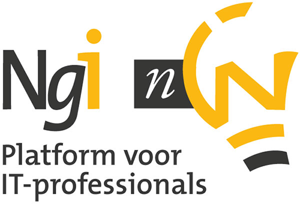

NGI-NGN

The Ngi-NGN, the Dutch association for ICT professionals and managers, an independent platform where over 2,500 members deepen their knowledge and maintain their professional network. The Ngi is founded in 1959.
The members of the Ngi-NGN have access to a number of regional and national events, such as lectures, seminars and conferences, and receive the monthly magazine "Information”.
For IT professionals and managers
The Ngi-NGN is interesting for highly educated ICT professionals and managers. The Ngi-NGN consists of departments and workgroups on current and relevant topics. The Ngi-NGN offers an effective network for sharing knowledge, practical experience and new developments. In addition, each member is also a member of the region where he or she is resident and can participate in the activities / lectures of the region.For ICT students
For the students Ngi-NGN offers a valuable entrance into the world of ICT. The platform offers young people the opportunity to come in contact and exchange ideas with other students and (young) professionals. The activities focus on networking, career and knowledge. Through Ngi-NGN students can get in contact to the practice of IT, for example through graduation and thesis topics and internships. Student Membership is free and includes also the magazine “Information", so the potential value of the Ngi-NGN is available for every student.For more information: http://www.ngi-ngn.nl.